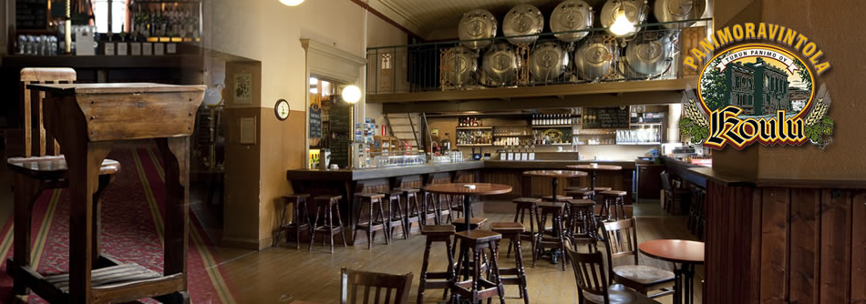
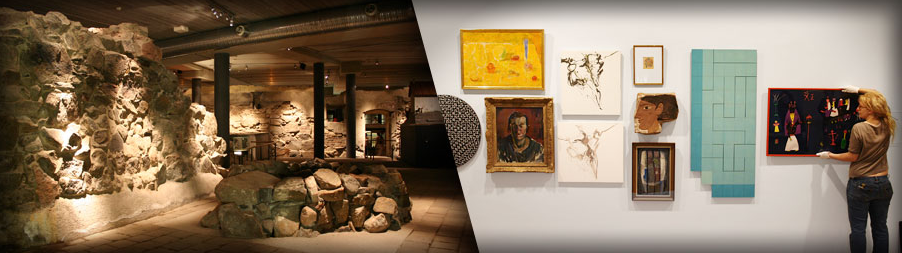
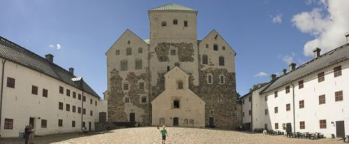

Dr. Olli Mertanen
Organization Committee Chair
Dr. Janne Roslöf
Further information
info@icee2012.fi
Website
www.icee2012.fi
Social Events
In addition to the topical program and the conference materials, the full registration fee includes lunches, refreshments and social events. The social events form an important part of the ICEE 2012 experience and provide opportunities to discuss and network with colleagues and, naturally, enjoy the Finnish hospitality and local culture.


The gala dinner will take place in Turku Castle on Wednesday evening. Turku Castle is a significant landmark at the mouth of Aura River. The castle is part of the Finnish cultural and architectural heritage as an architectural monument, a museum and as premises for distinguished celebrations. The castle is one of the most favorite tourist attractions and most visited museums in Finland and it provides an excellent venue for a memorable conference dinner.
Trips and Visits
Different trips and visits will be offered during the conference, too. Five interesting opportunities will be offered on Thursday (August 2) after the workshops:
- Walking tour in the old great square (afternoon, duration 2 hours)
- Aalto and Bryggman - architecture tour (afternoon, duration 3 hours)
- Design tour in Turku (afternoon, duration 2 hours)
- Traditional Finnish sauna party (evening, duration 5 hours)
- Evening cruise in the archipelago (evening, duration 3 hours)
Click here to find more information on the trips and prices
Please note that the trips are not included into the conference fee. The trips are organized by the Congress Office of the University of Turku. Registration and payments is done via a separate system (not via the ICEE 2012 conference registration system). Registrations must be made by 14 June 2012 (extended).